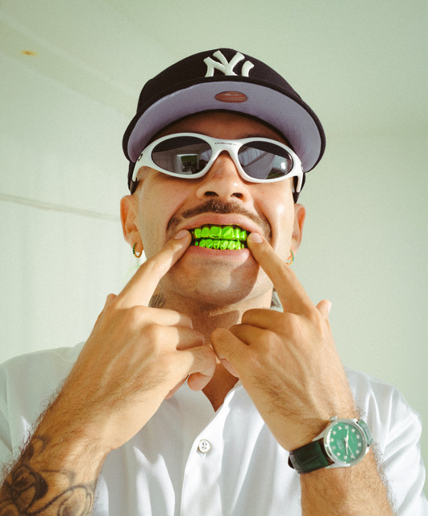

Salomón Villada Hoyos, conocido artísticamente como Feid o Ferxxo, es un destacado cantante, compositor y productor colombiano de género urbano nacido en Medellín el 19 de agosto de 1992. Iniciando su carrera como compositor para artistas como J Balvin, saltó a la fama internacional con éxitos propios y su distintivo estilo verde, consolidándose como uno de los referentes actuales del reguetón.

Origen y Nombre: Nació en Medellín y su nombre artístico, Feid, proviene de "Fe en Dios y en sí mismo".Su trayectoria comenzó su carrera como compositor, escribiendo éxitos para artistas como J Balvin (ej. "Ginza") antes de consolidarse como solista. Estilo y Ferxxo ha definido un estilo único en el reggaetón con letras pegajosas y una identidad visual marcada por el color verde y la jerga paisa, autodenominándose "Ferxxo". Aunque su base es el reggaetón, incorpora influencias del hip hop y R&B. Es uno de los artistas urbanos más importantes de la nueva generación, colaborando con figuras como Karol G, Bad Bunny y Rauw Alejandro
Alguien como yo no iba a enamorarse, yeah Yo que ni miro al celu, hago si no tirarte Yeah
Niña bonita ¿Qué va' a hacer? Nos vemo' ahorita Llegaste rota y yo te cuidé Hago de todo por esa nalguita
Baby girl, si yo te quiero y tú me quieres Por ti daría la vida Toma mi mano solo una noche Ya no te sientas solita Baby girl, si yo te quiero Por ti daría la vida Toma mi mano solo una noche Ya no te sientas solita
Yo te he caído varias veces, pero tú no está' Yo sé que tienes dos amigas pa' Sean Paul y Sky Lo que siento por ti me sube por las vértebras Me pone' caliente, ma, ese huevo quiere sal, yeah
Dios te dio muchos done' Y con ese cuerpecito tú me das bendicione' Te traigo un bikini, una hookah y unos blunte' Pa' irnos pa' Cartagena, pa' escuchar mis cancione'
Pa' ver si nos coge el atardecer de las cuatro Unos chorritos en la playa y te pongo en cuatro Nos damo' unas cervecitas pa'l guayabo Y nos vamo' pa' la piscinita en Guaynabo, oh-oh-oh
Si yo te quiero y tú me quieres Por ti daría la vida Toma mi mano solo una noche Ya no te sientas solita Baby girl, si yo te quiero Por ti daría la vida Toma mi mano solo una noche Ya no te sientas solita
The first time I saw your face Deep inna mi heart, girl, yuh take a big place, and The way how yuh wine your waist Mesmerizing, you mi waan chase, girl You take over my headspace Longest nights and the longest days, girl I wanna know wah di pree I wanna know what you feel about me, baby I wanna know, wanna see Sexy body bou yah, bring it on me, baby I wanna make you believe Love you more than how mi love burnin' trees And I wanna make memories with you, baby girl Mi seh please don't tease I get up inna your blood capillaries And make families, that's the way I see it, girl
Si yo te quiero y tú me quieres Por ti daría la vida Toma mi mano solo una noche Ya no te sientas solita Baby girl, si yo te quiero Por ti daría la vida Toma mi mano solo una noche Ya no te sientas solita